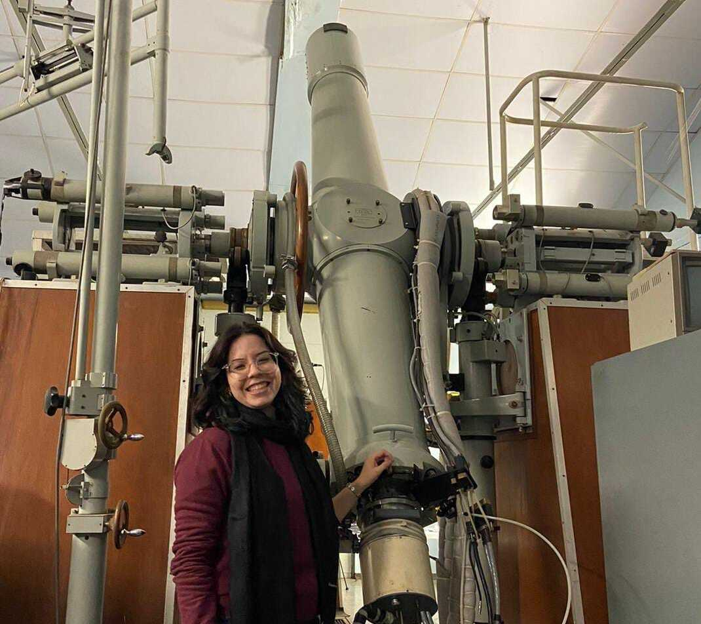
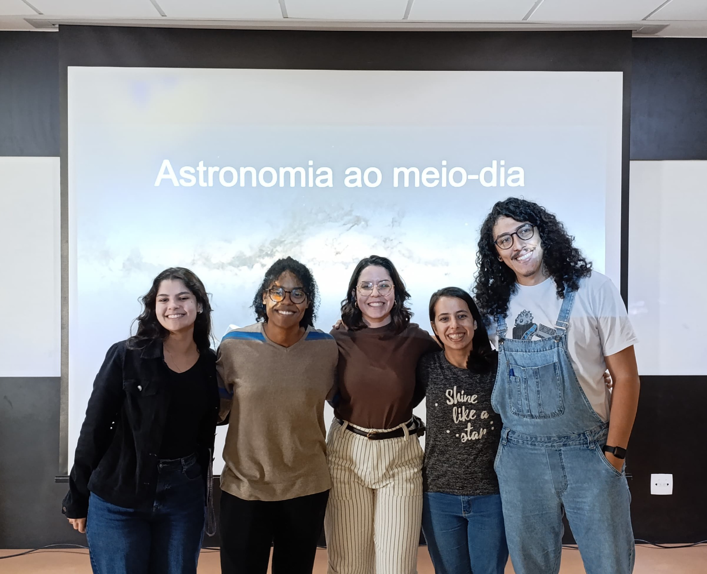
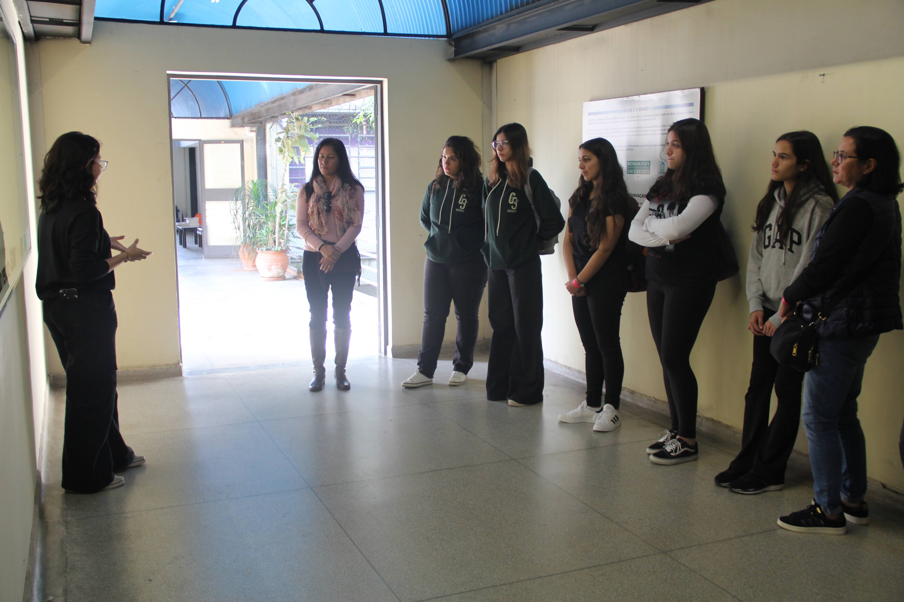
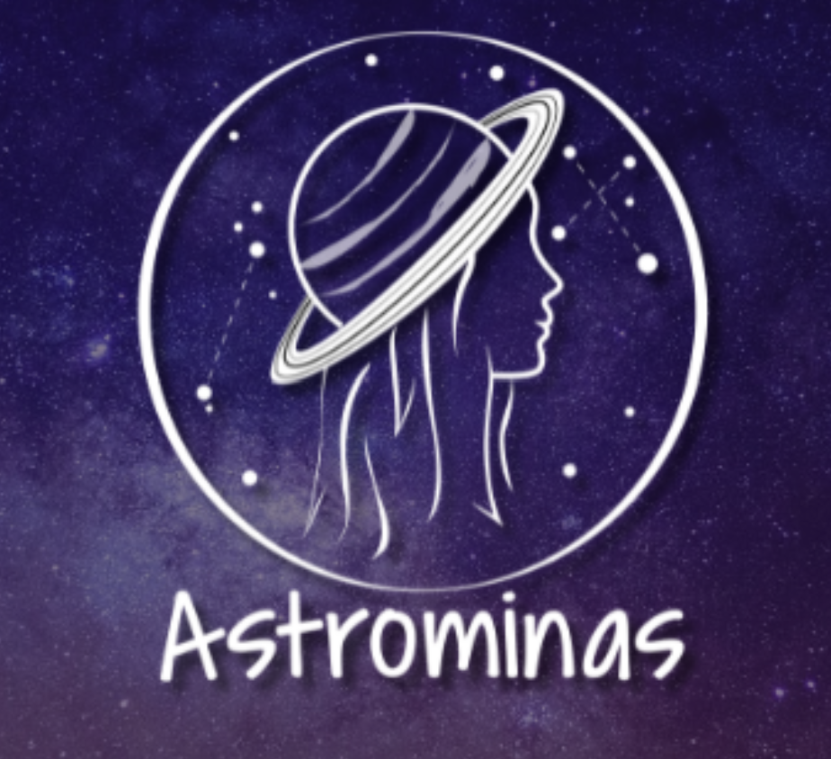
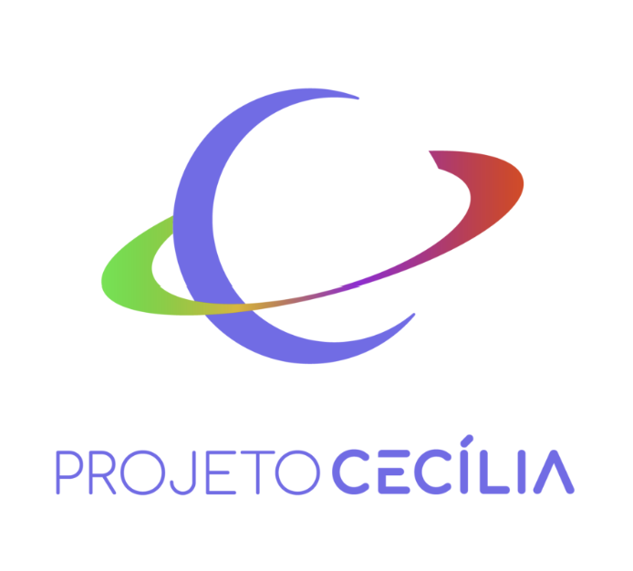

Throughout my academic career, I have participated in numerous scientific outreach activities within the Department of Astronomy, Geophysics, and Atmospheric Sciences at USP (IAG/USP). Below are some of the main ones:

Abrahão de Morais Observatory
The Abrahão de Morais Observatory is located in the city of Valinhos, in the state of São Paulo - BR, and is owned by the IAG/USP institute. Founded in 1972, it was essential for the advancement of research in the field of astrometry. Currently, it serves as a hub for disseminating knowledge through its educational and scientific outreach activities. Every month, the observatory opens its doors to the general public and school groups. This place is partly responsible for my passion for astronomy, and today, it is a pleasure for me to be part of the team.

"Astronomy at Noon" Seminar Series
"Astronomy at Noon" is a weekly seminar series held every Thursday at noon at the Institute of Astronomy, Geophysics, and Atmospheric Sciences (IAG/USP). The primary aim is to present astronomy research in an accessible manner, particularly targeting first-year undergraduate students in the exact sciences.
All presentations (in Portuguese) can be found at the link: See on YouTube
Take the opportunity to also check out the seminars of the IAG/USP astronomy department (in English) on YouTube

Astronomical Service at IAG/USP
The Astronomy Service aims to promote the scientific dissemination of Astronomy for students in Elementary School I (4th and 5th grades), Elementary School II, and High School. Each Service includes a video lesson on Astronomy topics, followed by a live chat session to answer students' questions. The activity is offered online and free of charge, exclusively for school groups by prior appointment. Some special services are provided in person. The monitors who work in this Service are undergraduate and graduate students from the Astronomy Department of the IAG and other institutes of USP.

ASTROMINAS
The name ASTROMINAS comes from the combination of "astro" which refers to astronomy and "mina" a Brazilian slang term for a girl. This project is exclusively made up of and serves women, aiming to strengthen the contact between young girls and female scientists - thus encouraging the choice and maintenance of careers in Science and Technology and access to public universities. See more about the project on the official ASTROMINAS website.

Cecília project
The Cecília Project is a program developed by IAG/USP that brings scientific extension activities in the area of Earth and cosmic sciences to public schools in person or online. We provide knowledge such as astronomical observation techniques and telescopes, activities to recognize meteorological and geophysical phenomena, as well as a broader discussion on the evolution of life, our planet, and the Universe.